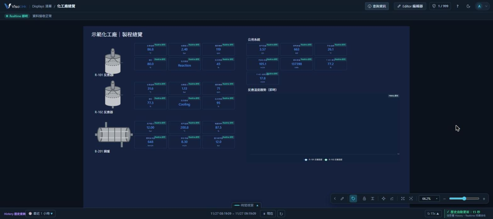

COURSE 00 · FOUNDATION
VisoLink
產品家族概觀
先認識 VisoLink、DataGateway、Agent 與備份中心各自負責什麼、如何搭配，再建立共同語言，進入監看、設計與管理工作。
所有人員共同必修建議 40 分鐘＋15 分鐘先備章節無先備要求對應 VisoLink 1.4.0-beta／DataGateway・Agent 0.4.0-beta／備份中心 0.1.0
COURSE OBJECTIVES
完成這門課後，你應該能回答五個基本問題
這是所有人員的入門課程，目的是先認識產品家族、工作區與自己的使用範圍，再進入各角色的操作課程。
01產品各做什麼？
說出 VisoLink、DataGateway、Agent 與備份中心的定位，以及資料怎麼在它們之間流動。
02我要在哪裡操作？
分辨 Display Library、Studio、Runtime 與 Administration 四個工作區的用途。
03我負責哪一段？
確認自己是監看、畫面設計或系統管理角色，以及要和誰交接。
04我可以看到什麼？
理解圖面權限與資料權限會共同決定實際可使用的內容。
第五個問題：「我的下一門課是哪一門？」在最後一頁依角色回答。
PRODUCT FAMILY
四個產品，各自部署、各自運作，也能互相搭配
VisoLink
工業資料視覺化平台（主軸）1.4.0-beta把既有資料變成可設計、可分析、可治理的監控畫面；也能把設定值經 DataGateway 寫回設備。
DataGateway
設備資料中樞0.4.0-beta集中管理 Tag，接收現場資料，依保存政策保存歷史，提供即時、歷史查詢與設備回寫。
DataGateway Agent
現場資料取得0.4.0-beta部署在設備旁，以 Modbus TCP、OPC UA 讀取設備資料推送給 DataGateway，並執行回寫；裝在靠近設備、已備妥 Docker 的主機。
VisoLink 備份中心
中央備份與還原0.1.0統一排程備份 VisoLink、DataGateway、Agent，可還原到原機，或在新機器上換機還原。
各自獨立：VisoLink 不需要 DataGateway 也能使用，直接以自己的連接器讀取既有資料庫與時序資料庫；DataGateway 也能單獨運作。客戶可以只用 VisoLink，再依需要加上其他產品。
HOW THEY WORK TOGETHER
資料從設備一路到畫面；回寫走相反方向
現場設備PLC、控制器、儀表（Modbus TCP、OPC UA）
取得Agent讀取資料點並推送；DataGateway 連不上時暫存在本機，恢復後補傳。
中樞DataGatewayTag、歷史保存、即時值；回寫以 Tag 為目標轉給對應 Agent。
使用VisoLink畫面顯示即時值與歷史；Runtime 回寫表單送出設定值。
歷史資料
VisoLink 以「VisoLink DataGateway」資料來源讀取 DataGateway 保存的歷史，供趨勢、表格使用。
即時與回寫
VisoLink 以「DataGateway 即時」連線讀取目前值並回寫設備；連線用 DataGateway 提供的配對碼完成。
既有資料庫
不經 DataGateway 的資料，例如關聯式資料庫與時序資料庫，由 VisoLink 直接以連接器讀取。
DATAGATEWAY & AGENT
DataGateway 與 Agent 各有自己的管理網頁
 DataGateway Server 總覽：Agent 數量、待核准數與容器服務狀態。
DataGateway Server 總覽：Agent 數量、待核准數與容器服務狀態。 Agent 總覽：整體狀態與「DataGateway → Agent → 設備連線」的運作拓樸。
Agent 總覽：整體狀態與「DataGateway → Agent → 設備連線」的運作拓樸。BACKUP CENTER
產品自己就能備份；備份中心再加上中央管理與排程
各產品自己的備份
- VisoLink、DataGateway 都能在自己的管理畫面手動備份與還原
- 適合臨時備份、單次還原
- VisoLink 管理員的做法見 Course 06
VisoLink 備份中心
- 登記 VisoLink、DataGateway、Agent 為受管主機，統一排程備份
- 原機還原、換機還原；換機後 Agent 不必改設定就會自動連回
- 備份檔以備份密碼加密，遺失密碼就無法還原
備份是定時快照：還原會回到備份當時的狀態；還原期間受管主機切換為「維護中」，畫面暫停讀取與回寫，結束後自動恢復。完整課程見
Course 08 備份中心。
BEFORE VISOLINK
先理解生產的「結果」與「過程」
同一段生產可以留下兩種不同資料：完成時形成一筆結果紀錄，生產期間則持續產生時序資料。
●生產結果
在完成、過站或結算時記錄批號、數量、良率與狀態。
告訴我們最後發生了什麼←
━生產過程
在一段時間內持續記錄溫度、壓力、速度、流量與設備狀態。
說明結果形成的過程→
⌁時間情境
把結果發生的時間點，對回它所代表的生產區間。
建立可以分析的關聯
FOUNDATION MODULE
為什麼操作平台前，要先認識時序資料？
若只看到生產結果，會知道良率下降；只有展開結果之前的時間區間，才可能看見溫度、壓力或速度何時開始偏離。
- 分辨生產結果紀錄與生產過程資料
- 理解現在與過去是不同的時間情境
- 用「點」看某個時間，用「線」看一段區間
- 理解平均、最大、最小、加總與筆數的意義
BACK TO VISOLINK
帶回 VisoLink：分清「現在」與「一段時間」
VisoLink 同時處理兩種資料：即時資料只顯示現在；歷史資料依下方的共同時間範圍查詢。
全域時間 Filter：決定 Runtime 歷史元件與分析功能正在使用哪一段時間資料。相同畫面在不同時間情境下，呈現的是不同的生產狀態與分析結果。
重新查看：時序資料基礎 →
FOUR WORKSPACES
看到畫面時，先確認自己在 VisoLink 的哪個工作區
L
Display Library
找畫面、整理資料夾、從樣本建立 Display、匯出入與設定圖面權限。
找與整理S
Studio
配置 Symbol、綁定資料、建立 Variable 與 Calculation，另做手機與平板用的 RWD 版面。
內容建構R
Runtime
即時與歷史監看、時間控制、資料分析，以及送出設備回寫。
內容使用A
Administration
管理資料來源、人員、權限、圖庫、語系、授權、備份、系統設定與 Cache。
平台治理
Runtime 範例：示範化工廠總覽，數值標示 Realtime 即時，趨勢標示 History 歷史。
ROLES
三類角色不是三套系統，而是一條協作鏈
👁監看人員
輸入：可用 Display。
產出：判讀、分析、經授權的回寫與異常回報。
把使用經驗回饋給設計者✦Studio 設計人員
輸入：操作需求與可用資料。
產出：經 Runtime 驗證的 Display（含 RWD 版面與回寫表單）。
向管理員確認資料語意⚙系統管理員
輸入：資料與授權需求。
產出：安全、穩定、可備份還原的使用環境。
支援設計與日常使用
END-TO-END
從來源資料到營運行動
1連接DataSource／DataGateway 即時
2整理View／DataBinding
3計算Variable／Calculation
4設計Display／Symbol／RWD
5監看與操作Runtime／分析／回寫
6治理人員／權限／備份／維護
交接原則：上游應說明資料語意與限制；下游應回報實際使用結果與異常情境。
COMMON LANGUAGE
十個後續課程會反覆使用的名詞
DataSource
外部資料連接View
可使用的資料結構DataBinding
Studio 使用的資料物件Tag／Field
量測點與資料欄位Display
完整監看畫面Symbol
畫面視覺元件Variable
可重用的取值結果Calculation
衍生計算樣本與底板
可重用的畫面與框架回寫表單
把設定值送回設備
CONTEXT
一個數字，必須連同四個問題一起理解
單看數值、不看時間與定義，是監看與分析最常見的誤判來源。
PERMISSIONS
看得到 Display，不代表看得到其中所有資料
▧圖面權限
控制能否進入、瀏覽、設計或管理 Display 與 Folder。
控制入口＋
⌁資料權限
控制能否使用 DataBinding；即時資料另有「使用」與「寫入」兩組權限。
控制內容與回寫＝
✓實際結果
兩層授權都符合，才會完整呈現；管理員可用「有效權限預覽」一次查清楚。
NEXT STEP
依角色進入後續課程
監看人員Course 01
Runtime 操作、分析與回寫
Studio 設計人員Course 01–04
操作、設計、綁定與計算
系統管理員Course 01、05–06
使用情境、資料與治理
通過標準能說明四個產品的定位與資料流向、自己的工作區、上下游交接、主要物件與下一門必修課。